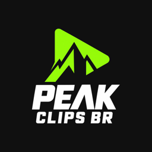

Peak Clips
O Peak Clips publica os melhores momentos de podcasts e lives de criadores estrangeiros, com legendas em português do Brasil, sempre com crédito ao criador original.
Este site descreve o aplicativo Peak Clips, uma ferramenta pessoal usada apenas pelo seu dono para publicar os próprios vídeos nas contas oficiais do Peak Clips no Instagram e no YouTube, pelas APIs oficiais dessas plataformas.
English
Peak Clips publishes the best moments from foreign creators' podcasts and live streams, subtitled in Brazilian Portuguese and always credited to the original creator.
This site describes the Peak Clips application: a personal tool used only by its owner to publish his own videos to the official Peak Clips accounts on Instagram and YouTube through those platforms' official APIs. It does not offer accounts or services to other users.
Ao usá-lo, valem os Termos de Serviço do YouTube e a Política de Privacidade do Google. Veja a nossa Política de Privacidade.